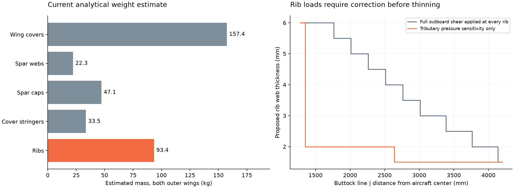
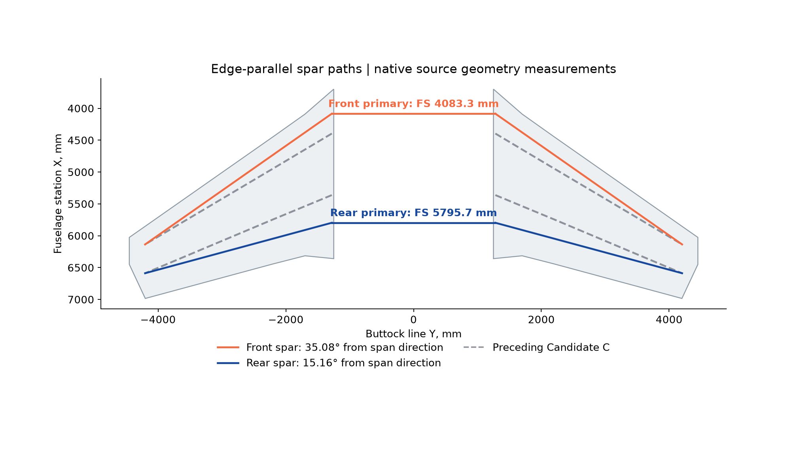
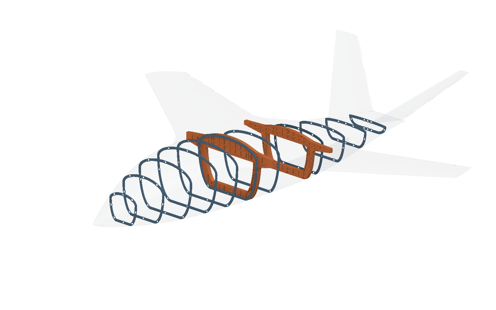
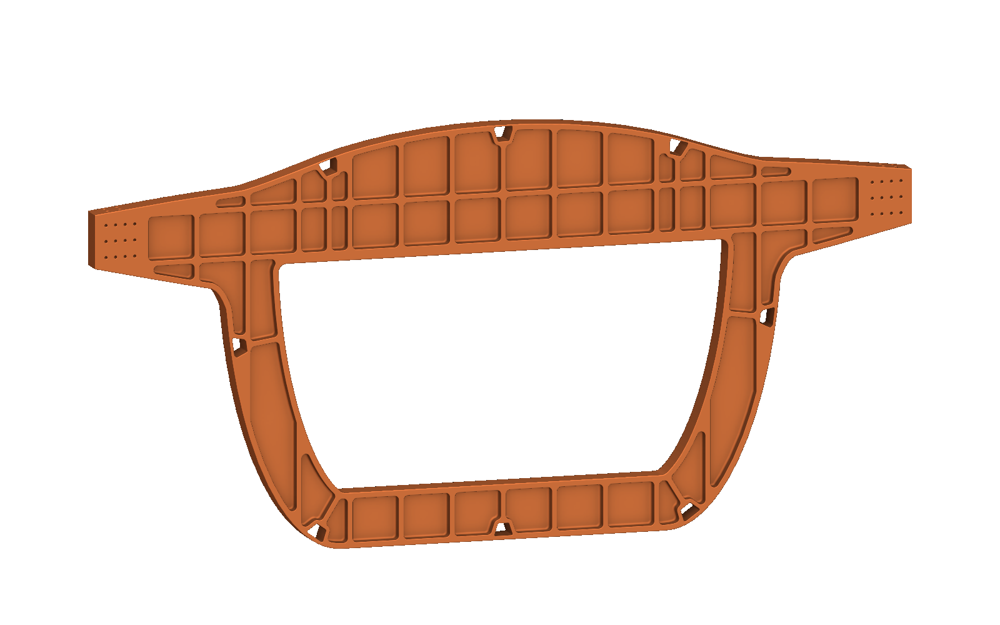
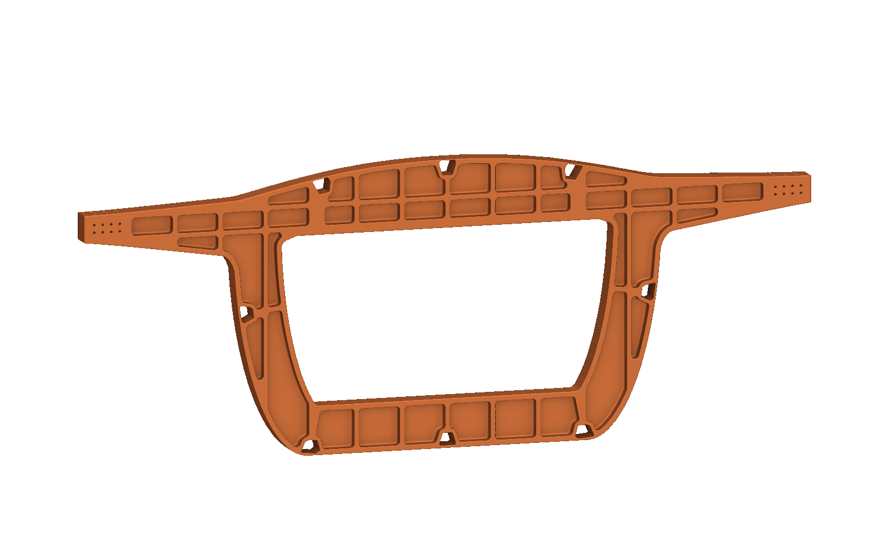
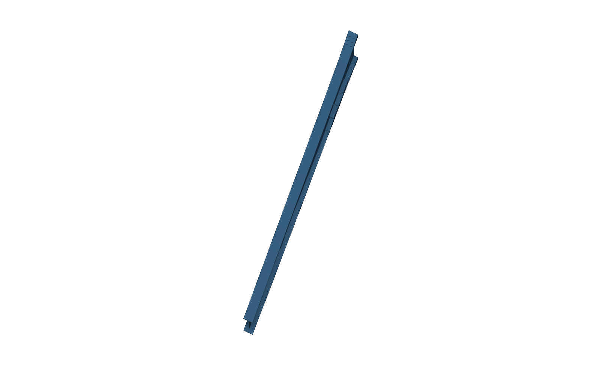

The sizing assumptions
need correction
A sizing audit found an incorrect rib load method, artificial analysis mass and fixed geometry that still needs optimization.
The apparent weight prompted a check of the calculations behind the geometry. Several assumptions inflate the estimate. Other assumptions overstate restraint and load transfer.
Review finding
The current analysis does not establish the required gauges. Retain this model as a comparison while the sizing method is corrected.
The artificial connection mass is corrected. The ordinary-rib load method is identified and tested with a limited sensitivity. That sensitivity is not a complete rib design.
01Which sizing assumptions hold?
| Input or method | Current basis | Audit finding |
|---|---|---|
| Gross weight | 7500 lb / 3401.94 kg | User assumption. An empty-weight target and equipment mass distribution are still missing. |
| Maneuver and roll loads | +3.8 g, -1.5 g; 70/30 lift split | Provisional. These do not establish the mission, gust, speed or control-load envelope. |
| Ultimate load | 1.5 times limit load | Retained in this audit. Lowering it is not a weight optimization. |
| Buckling treatment | 0.65 capacity knockdown; reserve factor 1.15 at ultimate | This requires ideal elastic buckling capacity at least 2.654 times limit demand. The added allowances are not calibrated. |
| Ordinary wing ribs | Full outboard wing shear at every station | Incorrect as a general pressure-transfer model. Use local pressure and the actual diaphragm and attachment load cases. |
| Spar caps and root joints | 76 mm cap width across the span; broad splice plates | Root hardware drove a fixed width. Spanwise width, joint footprint and fastener count were not optimized. |
| Primary bulkheads | 76 mm stock; 10 mm residual pocket floors | Current proposed gauges. Their earlier local screens do not validate the moved stations. |
| Skin and connections | Perfect skin attachment; idealized links and stiffeners | Potentially optimistic. The native connection detail and stiffness model do not yet match. |
FAA flight-load guidance considers maneuver and gust conditions across the structural envelope. It does not validate the selected 3.8 g value for this aircraft. FAA Part 23 amendment reference.
02Ordinary ribs carry local loads
The earlier routine assigns the remaining outboard wing shear to every rib. This repeats a load that the spanwise wing structure carries.
The sensitivity integrates pressure between adjacent rib midpoints. The tributary loads sum to the one-wing pressure resultant. Root and tip closure checks retain their separate load envelopes.

| Rib estimate, both wings | Mass, kg | Interpretation |
|---|---|---|
| Earlier full-shear routine | 93.39 | Uses the flawed ordinary-rib load assignment |
| Tributary-pressure sensitivity | 61.01 | Still excludes several rib load cases |
| Potential difference | 32.38 | Not a verified aircraft weight saving |
The sensitivity still includes assumed perimeter flanges and stiffeners. The native ribs do not yet contain every credited detail. Sweep-force transfer, diaphragm action, fuel, equipment and control attachments must be added before selecting thinner webs.
Allowing stable postbuckling can change a panel design. That requires a model of combined loads, imperfections and the skin-to-stiffener interface. This audit takes no postbuckling credit. NASA POSTOP theory and capability.
03Keep physical weight separate from analysis mass
| Mass basis | Mass, kg | Scope |
|---|---|---|
| Outer-wing analytical estimate | 353.80 | Both outer wings. Includes the flawed rib estimate and approximate thin-wall sections. |
| Two primary CAD solids | 205.82 | Net reconstructed STEP volume at assumed density 2830 kg/m³. |
| Checked new CAD definitions (81/81) | 795.51 | Includes the two primaries. Excludes retained fuselage/tail parts and hardware. |
| Global structural idealization, before correction | 1236.40 | Contained artificial coupling-beam mass. |
| Global structural idealization, corrected | 928.12 | Different scope and sections from the CAD ledger. Not an aircraft BOM. |
| Artificial connection mass removed from accounting | 308.27 | Coupling stiffness and gross aircraft mass remain unchanged. No physical material was removed. |
These totals overlap. Do not add them. Reconciliation must also remove cover/cap overlap and use the native gauge direction in the section stiffness calculation.
Where the CAD mass sits
| New CAD family | Net mass, kg |
|---|---|
| primary | 205.82 |
| center covers | 188.75 |
| cover | 146.04 |
| splice | 102.82 |
| spar | 58.09 |
| rib | 53.21 |
| stringer | 28.88 |
| frame | 11.91 |
The two center covers increase from 102.66 kg in the preceding Candidate C to 188.75 kg with the edge-aligned stations. This 86.09 kg increase comes from regenerating the larger center box with the retained cover construction. It has not been optimized.
The geometry and analytical stiffness do not yet agree
A separate check intersects the actual stock cells with planes normal to the wing axis. It unions their sections and integrates area and bending moments. Rectangle and cavity benchmarks verify the integration routine.
| Section BL, mm | Stock area vs. analytical area | Stock / analytical bending stiffness range |
|---|---|---|
| 1900 | -11.68% | 0.633 to 0.808 |
| 2850 | -9.69% | 0.747 to 0.880 |
| 3900 | -13.29% | 0.740 to 0.851 |
The three sampled stock sections provide 12-37% less bending stiffness than the analytical sections predict. The comparison excludes holes, ribs and root splices. It does not establish torsional stiffness. This measured mismatch must be corrected before using the global screen to select thinner gauges.
Recalculated global cases
The massless-link model preserves the assumed 7500 lb gross mass by adjusting the remaining distributed mass. It reruns pitch trim and inertia relief.
| Case | Wing ultimate stress, MPa | Change from mass correction | Wing local buckling RF |
|---|---|---|---|
| positive-3p8g | 179.25 | -0.019% | 1.564 |
| negative-1p5g | 70.76 | -0.019% | 3.981 |
| roll-70-30 | 219.44 | -0.317% | 1.267 |
The refined model has 2,307 nodes, 2,412 beams and 1,536 membrane triangles. The two refinement levels change recovered wing stress by less than 0.4% and displacement by less than 0.8%.
The wing screen is only one part of the result. The global model still flags ordinary frames, skin and tail load introduction. Very high local stresses at the idealized tail attachment show that its load path needs correction. They are not credible elastic operating stresses.
04The revised spars follow the wing edges
The straight outer-panel edge fits use source sections from BL 2200 to 4200 mm. The existing spar positions at BL 4200 remain proposed anchors. Extending edge-parallel lines inboard changes both primary stations.
| Measured or derived geometry | Front spar | Rear spar |
|---|---|---|
| Sweep from spanwise direction | 35.08° | 15.16° |
| Root station, mm | 4083.31 | 5795.74 |
| Movement from preceding C, mm | -311.94 | +434.39 |
| Available depth across root cap land, mm | 165.98 | 93.76 |

The aft spar now lies in a shallower wing region. That can increase required cap area and joint depth constraints. Edge alignment alone does not prove a lower structural weight.
05Native geometry documents the current comparison




Both revised primaries pass 2,935 native field checks. The checks sample pockets, bores, bearing lands and longeron clearances. They do not establish structural strength or all assembly contacts.
The assembled comparison contains 174 imported native definitions and 1128 nominal fasteners. Complete graph and input-default checks pass. All 143 checked GUI variables evaluate successfully. These checks establish native construction, not structural capacity.
The source and accepted Revision F remain preserved. Separate revised part notebooks contain native feature definitions. Assembly regeneration and its verification records use the isolated edge_aligned folder.
STEP provenance
The STEP files come from an independent Open CASCADE reconstruction of the shared stock, pocket and drill definitions. They are not direct exports of an nTop implicit. Both primary STEP files reimport as valid single solids. Native field checks and CAD validity are separate tests.
06What must change before weight is credible
| Work | Required result |
|---|---|
| Reconcile geometry, mass and stiffness | Use matching section boundaries and gauge directions. Separate physical parts from mathematical coupling. |
| Resolve rib load cases | Combine tributary pressure with diaphragm, sweep and attachment loads. Model every credited flange and stiffener. |
| Optimize sections and joints | Trade cap width, cover/stringer arrangement, root splice footprint and fastener rows together. |
| Reassess primary floors and ordinary frames | Use loads recovered at the revised stations. Check out-of-plane stability and local joint effects. |
| Define the flight and equipment envelope | Keep the present assumptions visible until mission, speeds, gusts, mass distribution and control loads replace them. |
| Validate critical regions | Complete shell/contact checks, connection load sharing, fatigue, tolerances and manufacturing access. |
The current 0.5 mm gauge search is local. It does not establish minimum weight. The next sizing pass must correct the model before it searches thinner sections.
07Evidence and reproducibility
- Actual stock section audit
- Sizing audit and pressure-conservation check
- Corrected global calculations
- Coarser global comparison
- Retained calculation with artificial mass
- Checked CAD part masses
- Mass scope and missing definitions
- Measured edge directions and stations
- Native edge-aligned comparison assembly
- Native forward primary comparison
- Native aft primary comparison
- Forward primary STEP
- Aft primary STEP
Host Python uses uv. Run the corrected global solver at refinements 4 and 8, then run edge_aligned_sizing_audit.py and this report script. The environment variable CIVIL_AIRCRAFT_VARIANT selects edge_aligned. The default global model now uses massless connection links. The explicit --legacy-link-mass option reproduces the earlier error for comparison.
Classification: source geometry is measured or derived; aircraft mass is user-assumed; loads, gauges and material ceilings are proposed. CAD masses use integrated B-rep volumes. Analysis masses use idealized sections. This report does not establish manufacturing or flight release.